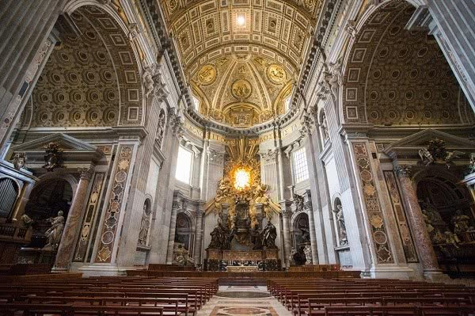

Ciekawostki o chrześcijaństwie
Interesujące fakty
- Największym kościołem świata jest Bazylika św. Piotra w Watykanie. (zdjęcie na dole)
- Papież mieszka w Watykanie, najmniejszym państwie świata.
- Chrześcijaństwo ma ponad 2,2 miliarda wyznawców na całym świecie.
- Najczęściej obchodzone święto to Boże Narodzenie.
- Symbolem religii jest krzyż, który przypomina o śmierci i zmartwychwstaniu Jezusa.
